Pairwise distances between 74 points from some metric space have been recorded and stored in a 74× 74 matrix D. The following commands load the matrix, construct a filtration of length 100 on the first two dimensions of the assotiated clique complex (also known as the Vietoris-Rips Complex), and display the resulting degree 0 persistent homology as a barcode. A single bar with label n denotes n bars with common starting point and common end point.
gap> file:=HapFile("data253a.txt");; gap> Read(file); gap> G:=SymmetricMatrixToFilteredGraph(D,100); Filtered graph on 74 vertices. gap> K:=FilteredRegularCWComplex(CliqueComplex(G,2)); Filtered regular CW-complex of dimension 2 gap> P:=PersistentBettiNumbers(K,0);; gap> BarCodeCompactDisplay(P);
The first 54 terms in the filtration each have 74 path components -- one for each point in the sample. During the next 9 filtration terms the number of path components reduces, meaning that sample points begin to coalesce due to the formation of edges in the simplicial complexes. Then, two path components persist over an interval of 18 filtration terms, before they eventually coalesce.
The next commands display the resulting degree 1 persistent homology as a barcode.
gap> P:=PersistentBettiNumbers(K,1);; gap> BarCodeCompactDisplay(P);
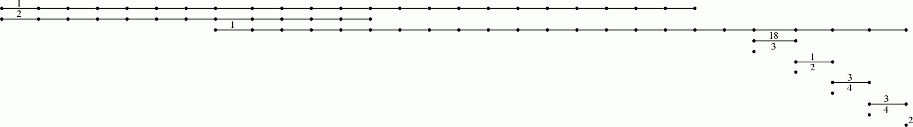
Interpreting short bars as noise, we see for instance that the 65th term in the filtration could be regarded as noiseless and belonging to a "stable interval" in the filtration with regards to first and second homology functors. The following command displays (up to homotopy) the 1 skeleton of the simplicial complex arizing as the 65-th term in the filtration on the clique complex.
gap> Y:=FiltrationTerm(K,65); Regular CW-complex of dimension 1 gap> Display(HomotopyGraph(Y));
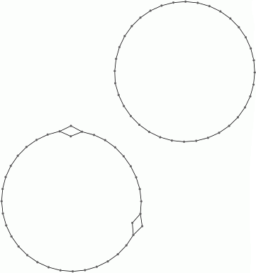
These computations suggest that the dataset contains two persistent path components (or clusters), and that each path component is in some sense periodic. The final command displays one possible representation of the data as points on two circles.
Each point in the dataset was an image consisting of 732× 761 pixels. This point was regarded as a vector in R^557052= R^732× 761 and the matrix D was constructed using the Euclidean metric. The images were the following:
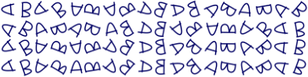
The following example reads in a set S of vectors of rational numbers. It uses the Euclidean distance d(u,v) between vectors. It fixes some vector u_0∈ S and uses the associated function f: D→ [0,b] ⊂ R, v↦ d(u_0,v). In addition, it uses an open cover of the interval [0,b] consisting of 100 uniformly distributed overlapping open subintervals of radius r=29. It also uses a simple clustering algorithm implemented in the function cluster.
These ingredients are input into the Mapper clustering procedure to produce a simplicial complex M which is intended to be a representation of the data. The complex M is 1-dimensional and the final command uses GraphViz software to visualize the graph. The nodes of this simplicial complex are "buckets" containing data points. A data point may reside in several buckets. The number of points in the bucket determines the size of the node. Two nodes are connected by an edge when they contain common data points.
gap> file:=HapFile("data134.txt");; gap> Read(file); gap> dx:=EuclideanApproximatedMetric;; gap> dz:=EuclideanApproximatedMetric;; gap> L:=List(S,x->Maximum(List(S,y->dx(x,y))));; gap> n:=Position(L,Minimum(L));; gap> f:=function(x); return [dx(S[n],x)]; end;; gap> P:=30*[0..100];; P:=List(P, i->[i]);; gap> r:=29;; gap> epsilon:=75;; gap> cluster:=function(S) > local Y, P, C; > if Length(S)=0 then return S; fi; > Y:=VectorsToOneSkeleton(S,epsilon,dx); > P:=PiZero(Y); > C:=Classify([1..Length(S)],P[2]); > return List(C,x->S{x}); > end;; gap> M:=Mapper(S,dx,f,dz,P,r,cluster); Simplicial complex of dimension 1. gap> Display(GraphOfSimplicialComplex(M));

The datacloud S consists of the 400 points in the plane shown in the following picture.

A CW-complex X is said to be pure if all of its top-dimensional cells have a common dimension. There are instances where such a space X provides a convenient ambient space whose subspaces can be used to model experimental data. For instance, the plane X= R^2 admits a pure regular CW-structure whose 2-cells are open unit squares with integer coordinate vertices. An alternative, and sometimes preferrable, pure regular CW-structure on R^2 is one where the 2-cells are all reguar hexagons with sides of unit length. Any digital image can be thresholded to produce a black-white image and this black-white image can naturally be regared as a finite pure cellular subcomplex of either of the two proposed CW-structures on R^2. Analogously, thresholding can be used to represent 3-dimensional greyscale images as finite pure cellular subspaces of cubical or permutahedral CW-structures on R^3, and to represent RGB colour photographs as analogous subcomplexes of R^5.
In this section we list a few functions for performing basic operations on n-dimensional pure cubical and pure permutahedral finite subcomplexes M of X=R^n. We refer to M simply as a pure complex. In subsequent sections we demonstrate how these few functions on pure complexes allow for in-depth analysis of experimental data.
(Aside. The basic operations could equally well be implemented for other CW-decompositions of X= R^n such as the regular CW-decompositions arising as the tessellations by a fundamental domain of a Bieberbach group (=torsion free crytallographic group). Moreover, the basic operations could also be implemented for other manifolds such as an n-torus X=S^1× S^1 × ⋯ × S^1 or n-sphere X=S^n or for X the universal cover of some interesting hyperbolic 3-manifold. An example use of the ambient manifold X=S^1× S^1× S^1 could be for the construction of a cellular subspace recording the time of day, day of week and week of the year of crimes committed in a population.)
Basic operations returning pure complexes. ( Function descriptions available here.)
PureCubicalComplex(binary array)
PurePermutahedralComplex(binary array)
ReadImageAsPureCubicalComplex(file,threshold)
ReadImageSquenceAsPureCubicalComplex(file,threshold)
PureComplexBoundary(M)
PureComplexComplement(M)
PureComplexRandomCell(M)
PureComplexThickened(M)
ContractedComplex(M, optional subcomplex of M)
ExpandedComplex(M, optional supercomplex of M)
PureComplexUnion(M,N)
PureComplexIntersection(M,N)
PureComplexDifference(M,N)
FiltrationTerm(F,n)
Basic operations returning filtered pure complexes.
PureComplexThickeningFiltration(M,length)
ReadImageAsFilteredPureCubicalComplex(file,length)
The following example reads in a digital image as a filtered pure cubical complexex. The filtration is obtained by thresholding at a sequence of uniformly spaced values on the greyscale range. The persistent homology of this filtered complex is calculated in degrees 0 and 1 and displayed as two barcodes.
gap> file:=HapFile("image1.3.2.png");; gap> F:=ReadImageAsFilteredPureCubicalComplex(file,40); Filtered pure cubical complex of dimension 2. gap> P:=PersistentBettiNumbers(F,0);; gap> BarCodeCompactDisplay(P);
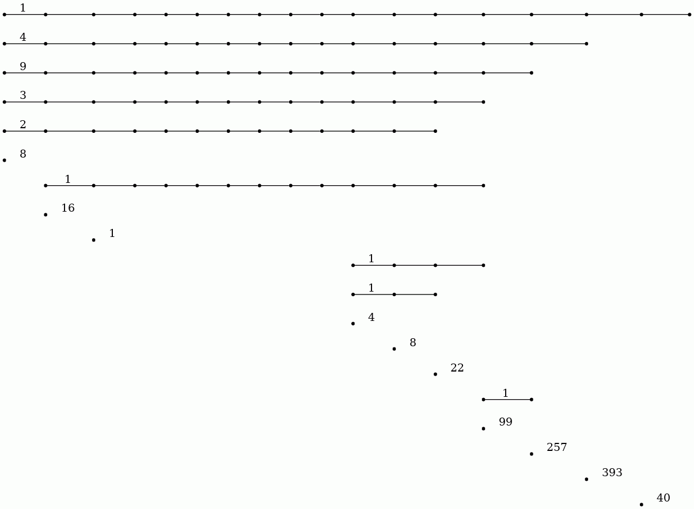
gap> P:=PersistentBettiNumbers(F,1);; gap> BarCodeCompactDisplay(P);
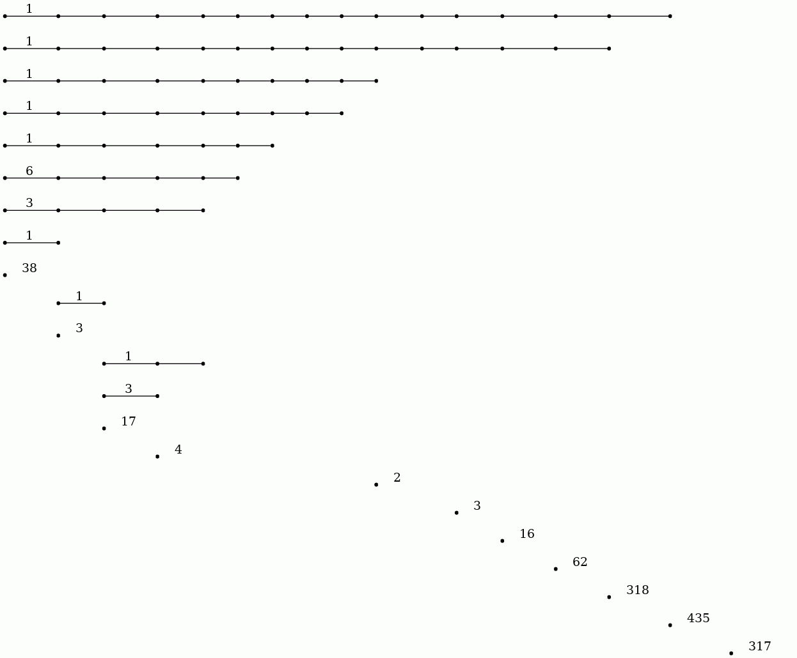
The 20 persistent bars in the degree 0 barcode suggest that the image has 20 objects. The degree 1 barcode suggests that there are 14 (or possibly 17) holes in these 20 objects.
Assuming that short bars and isolated points in the barcodes represent noise while long bars represent essential features, a "noiseless" representation of the image should correspond to a term in the filtration corresponding to a column in the barcode incident with all the long bars but incident with no short bars or isolated points. There is no noiseless term in the above filtration of length 40. However (in conjunction with the next subsection) the following commands confirm that the 64th term in the filtration of length 500 is such a term and display this term as a binary image.
gap> F:=ReadImageAsFilteredPureCubicalComplex(file,500);; gap> Y:=FiltrationTerm(F,64); Pure cubical complex of dimension 2. gap> BettiNumber(Y,0); 20 gap> BettiNumber(Y,1); 14 gap> Display(Y);
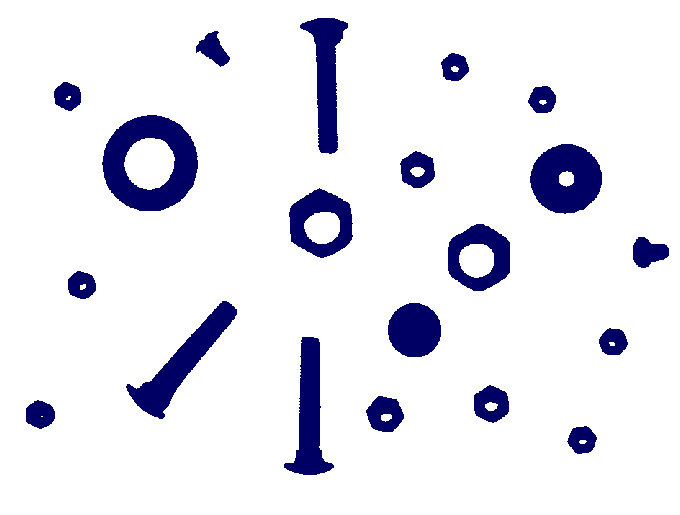
The first filtration for the image has 40 terms. One may wish to investigate a filtration with more terms, say 500 terms, with a view to analysing, say, those 1-cycles that are born by term 25 of the filtration and that die between terms 50 and 60. The following commands produce the relevant barcode showing that there is precisely one such 1-cycle.
gap> F:=ReadImageAsFilteredPureCubicalComplex(file,500);; gap> L:=[20,60,61,62,63,64,65,66,67,68,69,70];; gap> T:=FiltrationTerms(F,L);; gap> P0:=PersistentBettiNumbers(T,0);; gap> BarCodeCompactDisplay(P0); gap> P1:=PersistentBettiNumbers(T,1);; gap> BarCodeCompactDisplay(P1);
β_0:
β_1:
The following image was used in the example.
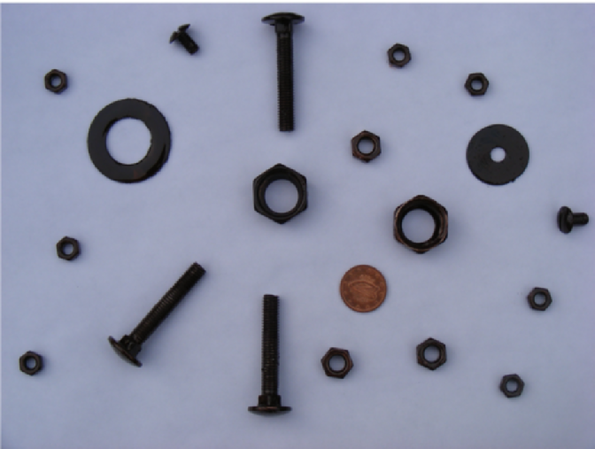
In order to automatically count the number of coins in this picture
we can load the image as a filtered pure cubical complex F of filtration length 40 say, and observe the degree zero persistent Betti numbers to establish that the 28-th term or so of F seems to be 'noise free' in degree zero. We can then set M equal to the 28-th term of F and thicken M a couple of times say to remove any tiny holes it may have. We can then construct the complement C of M. Then we can construct a 'neighbourhood thickening' filtration T of C with say 50 consecutive thickenings. The degree one persistent barcode for T has 24 long bars, suggesting that the original picture consists of 24 coins.
gap> F:=ReadImageAsFilteredPureCubicalComplex("my_coins.png",40);; gap> M:=FiltrationTerm(F,24);; #Chosen after viewing degree 0 barcode for F gap> M:=PureComplexThickened(M);; gap> M:=PureComplexThickened(M);; gap> C:=PureComplexComplement(M);; gap> T:=ThickeningFiltration(C,50);; gap> P:=PersistentBettiNumbers(T,1);; gap> BarCodeCompactDisplay(P);
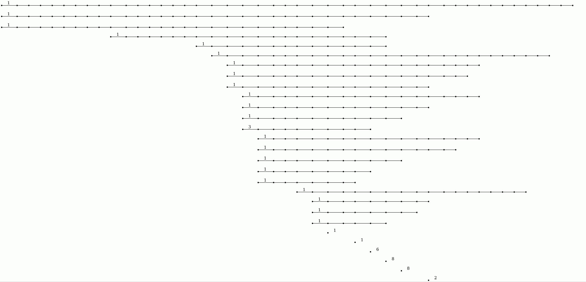
The pure cubical complex W:=PureComplexComplement(FiltrationTerm(T,25)) has the correct number of path components, namely 25, but its path components are very much subsets of the regions in the image corresponding to coins. The complex W can be thickened repeatedly, subject to no two path components being allowed to merge, in order to obtain a more realistic image segmentation with path components corresponding more closely to coins. This is done in the follow commands which use a makeshift function Basins(L) available here. The commands essentially implement a standard watershed segmentation algorithm but do so by using the language of filtered pure cubical complexes.
gap> W:=PureComplexComplement(FiltrationTerm(T,25));; gap> L:=[];; gap> for i in [1..PathComponentOfPureComplex(W,0)] do gap> P:=PathComponentOfPureComplex(W,i);; gap> Q:=ThickeningFiltration(P,50,M);; gap> Add(L,Q);; gap> od;; gap> B:=Basins(L); gap> Display(B);
The following image is number 3096 in the BSDS500 database of images [MFTM01].
A common first step in segmenting such an image is to appropriately threshold the corresponding gradient image.
The following commands use the thresholded gradient image to produce an outline of the aeroplane. The outline is a pure cubical complex with one path component and with first Betti number equal to 1.
gap> file:=Filename(DirectoriesPackageLibrary("HAP"),"../tutorial/images/3096b.jpg");; gap> F:=ReadImageAsFilteredPureCubicalComplex(file,30);; gap> F:=ComplementOfFilteredPureCubicalComplex(F);; gap> M:=FiltrationTerm(F,27);; #Thickening chosen based on degree 0 barcode gap> Display(M);; gap> P:=List([1..BettiNumber(M,0)],n->PathComponentOfPureComplex(M,n));; gap> P:=Filtered(P,m->Size(m)>10);; gap> M:=P[1];; gap> for m in P do > M:=PureComplexUnion(M,m);; > od; gap> T:=ThickeningFiltration(M,50);; gap> BettiNumber(FiltrationTerm(T,11),0); 1 gap> BettiNumber(FiltrationTerm(T,11),1); 1 gap> BettiNumber(FiltrationTerm(T,12),1); 0 gap> #Confirmation that 11-th filtration term has one hole and the 12-th term is contractible. gap> C:=FiltrationTerm(T,11);; gap> for n in Reversed([1..10]) do > C:=ContractedComplex(C,FiltrationTerm(T,n)); > od; gap> C:=PureComplexBoundary(PureComplexThickened(C));; gap> H:=HomotopyEquivalentMinimalPureCubicalSubcomplex(FiltrationTerm(T,12),C);; gap> B:=ContractedComplex(PureComplexBoundary(H));; gap> Display(B);
The following greyscale image is available from the online appendix to the paper [CKL14].
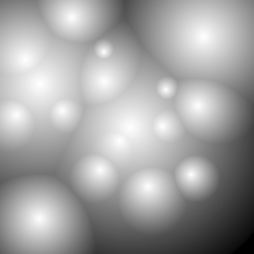
The following commands produce a picture of contours from this image based on greyscale values. They also produce a picture of just the closed contours (the non-closed contours having been homotopy collapsed to points).
gap> file:=Filename(DirectoriesPackageLibrary("HAP"),"../tutorial/images/circularGradient.png");; gap> L:=[];; gap> for n in [1..15] do > M:=ReadImageAsPureCubicalComplex(file,n*30000); > M:=PureComplexBoundary(M);; > Add(L,M); > od;; gap> C:=L[1];; gap> for n in [2..Length(L)] do C:=PureComplexUnion(C,L[n]); od; gap> Display(C); gap> Display(ContractedComplex(C));
Contours from the above greyscale image:
Closed contours from the above greyscale image:
Very similar results are obtained when applied to the file circularGradientNoise.png, containing noise, available from the online appendix to the paper [CKL14].
The number of distinct "light sources" in the image can be read from the countours. Alternatively, this number can be read directly from the barcode produced by the following commands.
gap> F:=ReadImageAsFilteredPureCubicalComplex(file,20);; gap> P:=PersistentBettiNumbersAlt(F,1);; gap> BarCodeCompactDisplay(P);
The seventeen bars in the barcode correspond to seventeen light sources. The length of a bar is a measure of the "persistence" of the corresponding light source. A long bar may initially represent a cluster of several lights whose members may eventually be distinguished from each other as new bars (or persistent homology classes) are created.
Here the command PersistentBettiNumbersAlt has been used. This command is explained in the following section.
The follwowing commands use a watershed method to partition the digital image into regions, one region per light source. A makeshift function Basins(L), available here, is called. (The efficiency of the example could be easily improved. For simplicity it uses generic commands which, in principle, can be applied to cubical or permutarhedral complexes of higher dimensions.)
gap> file:=Filename(DirectoriesPackageLibrary("HAP"),"../tutorial/images/circularGradient.png");; gap> F:=ReadImageAsFilteredPureCubicalComplex(file,20);; gap> FF:=ComplementOfFilteredPureCubicalComplex(F); gap> W:=(FiltrationTerm(FF,3)); gap> for n in [4..23] do > L:=[];; > for i in [1..PathComponentOfPureComplex(W,0)] do > P:=PathComponentOfPureComplex(W,i);; > Q:=ThickeningFiltration(P,150,FiltrationTerm(FF,n));; > Add(L,Q);; > od;; > W:=Basins(L); > od; gap> C:=PureComplexComplement(W);; gap> T:=PureComplexThickened(C);; C:=ContractedComplex(T,C);; gap> Display(C);
From any sequence X_0 ⊂ X_1 ⊂ X_2 ⊂ ⋯ ⊂ X_T of cellular spaces (such as pure cubical complexes, or cubical complexes, or simplicial complexes, or regular CW complexes) we can construct a filtered chain complex C_∗ X_0 ⊂ C_∗ X_1 ⊂ C_∗ X_2 ⊂ ⋯ C_∗ X_T. The induced homology homomorphisms H_n(C_∗ X_0, F) → H_n(C_∗ X_1, F) → H_n(C_∗ X_2, F) → ⋯ → H_n(C_∗ X_T, F) with coefficients in a field F can be computed by applying an appropriate sequence of elementary row operations to the boundary matrices in the chain complex C_∗ X_T⊗ F; the boundary matrices are sparse and are best represented as such; the row operations need to be applied in a fashion that respects the filtration. This method is used in the above examples of persistent homology. The method is not practical when the number of cells in X_T is large.
An alternative approach is to construct an admissible discrete vector field on each term X_k in the filtration. For each vector field there is a non-regular CW-complex Y_k whose cells correspond to the critical cells in X_k and for which there is a homotopy equivalence X_k≃ Y_k. For each k the composite homomorphism H_n(C_∗ Y_k, F) stackrel≅→ H_n(C_∗ X_k, F) → H_n(C_∗ X_k+1, F) stackrel≅→ H_n(C_∗ Y_k+1, F) can be computed and the persistent homology can be derived from these homology homomorphisms. This method is implemented in the function PersistentBettiNUmbersAlt(X,n,p) where p is the characteristic of the field, n is the homology degree, and X can be a filtered pure cubical complex, or a filtered simplicial complex, or a filtered regular CW complex, or indeed a filtered chain complex (represented in sparse form). This function incorporates the functions ContractedFilteredPureCubicalComplex(X) and ContractedFilteredRegularComplex(X) which respectively input a filtered pure cubical complex and filtered regular CW-complex and return a filtered complex of the same data type in which each term of the output filtration is a deformation retract of the corresponding term in the input filtration.
In this approach the vector fields on the various spaces X_k are completely independent and so the method lends itself to a degree of easy parallelism. This is not incorporated into the current implementation.
As an illustration we consider a synthetic data set S consisting of 3527 points sampled, with errors, from an `unknown' manifold M in R^3. From such a data set one can associate a 3-dimensional cubical complex X_0 consisting of one unit cube centred on each (suitably scaled) data point. A visualization of X_0 is shown below.
Given a pure cubical complex X_s we construct X_s+1 =X_s ∪ {overline e^3_λ}_λ∈ Λ by adding to X_s each closed unit cube overline e^3_λ in R^3 that intersects non-trivially with X_s. We construct the filtered cubical complex X_∗ ={X_i}_0≤ i≤ 19 and compute the persistence matrices β_d^∗∗ for d=0,1,2 and for Z_2 coefficients. The filtered complex X_∗ is quite large. In particular, the final space X_19 in the filtration involves 1092727 vertices, 3246354 edges, 3214836 faces of dimension 2 and 1061208 faces of dimension 3. The usual matrix reduction approach to computing persistent Betti numbers would involve an appropriate row reduction of sparse matrices one of which has over 3 million rows and 3 million columns.
gap> file:=HapFile("data247.txt");; gap> Read(file);; gap> F:=ThickeningFiltration(T,20);; gap> P:=PersistentBettiNumbersAlt(F,[0,1,2]);; gap> BarCodeCompactDisplay(P);

The barcodes suggest that the data points might have been sampled from a manifold with the homotopy type of a torus.
Of course, a wedge S^2∨ S^1∨ S^1 has the same homology as the torus S^1× S^1. By establishing that a 'noise free' model for our data points, say the 10-th term X_10 in the filtration, has a non-trivial cup product ∪: H^1(X_10, Z) × H^1(X_10, Z) → H^2(X_10, Z) we can eliminate S^2∨ S^1∨ S^1 as a candidate from which the data was sampled.
gap> X10:=RegularCWComplex(FiltrationTerm(F,10));; gap> cup:=LowDimensionalCupProduct(X10);; gap> cup([1,0],[0,1]); [ 1 ]
It could be desirable to obtain explicit representatives of the persistent homology generators that "persist" through a significant sequence of filtration terms. There are two such generators in degree 1 and one such generator in degree 2. The explicit representatives in degree n could consist of an inclusion of pure cubical complexes Y_n ⊂ X_10 for which the incuced homology homomorphism H_n(Y_n, Z) → H_n(X_10, Z) is an isomorphism, and for which Y_n is minimal in the sense that its homotopy type changes if any one or more of its top dimensional cells are removed. Ideally the space Y_n should be "close to the original dataset" X_0. The following commands first construct an explicit degree 2 homology generator representative Y_2⊂ X_10 where Y_2 is homotopy equivalent to X_10. They then construct an explicit degree 1 homology generators representative Y_1⊂ X_10 where Y_1 is homotopy equivalent to a wedge of two circles. The final command displays the homology generators representative Y_1.
gap> Y2:=FiltrationTerm(F,10);; gap> for t in Reversed([1..9]) do > Y2:=ContractedComplex(Y2,FiltrationTerm(F,t)); > od; gap> Y2:=ContractedComplex(Y2);; gap> Size(FiltrationTerm(F,10)); 918881 gap> Size(Y2); 61618 gap> Y1:=PureComplexDifference(Y2,PureComplexRandomCell(Y2));; gap> Y1:=ContractedComplex(Y1);; gap> Size(Y1); 474 gap> Display(Y1);
The Protein Data Bank contains a wealth of data which can be investigated with respect to knottedness. Information on a particular protein can be downloaded as a .pdb file. Each protein consists of one or more chains of amino acids and the file gives 3-dimensional Euclidean coordinates of the atoms in amino acids. Each amino acid has a unique "alpha carbon" atom (labelled as "CA" in the pdb file). A simple 3-dimensional curve, the protein backbone, can be constructed through the sequence of alpha carbon atoms. Typically the ends of the protein backbone lie near the "surface" of the protein and can be joined by a path outside of the protein to obtain a simple closed curve in Euclidean 3-space.
The following command reads in the pdb file for the T.thermophilus 1V2X protein, which consists of a single chain of amino acids, and uses Asymptote software to produce an interactive visualization of its backbone. A path joining the end vertices of the backbone is displayed in blue.
gap> file:=HapFile("data1V2X.pdb");; gap> DisplayPDBfile(file);

The next command reads in the pdb file for the T.thermophilus 1V2X protein and represents it as a 3-dimensional pure cubical complex K. A resolution of r=5 is chosen and this results in a representation as a subcomplex K of an ambient rectangular box of volume equal to 184× 186× 294 unit cubes. The complex K should have the homotopy type of a circle and the protein backbone is a 1-dimenional curve that should lie in K. The final command displays K.
gap> r:=5;; gap> K:=ReadPDBfileAsPureCubicalComplex(file,r);; gap> K:=ContractedComplex(K);; gap> K!.properties; [ [ "dimension", 3 ], [ "arraySize", [ 184, 186, 294 ] ] ] gap> Display(K);

Next we create a filtered pure cubical complex by repeatedly thickening K. We perform 15 thickenings, each thickening being a term in the filtration. The β_1 barcode for the filtration is displayed. This barcode is a descriptor for the geometry of the protein. For current purposes it suffices to note that the first few terms of the filtration have first homology equal to that of a circle. This indicates that the Euclidean coordinates in the pdb file robustly determine some knot.
gap> F:=ThickeningFiltration(K,15);; gap> F:=FilteredPureCubicalComplexToCubicalComplex(F);; gap> F:=FilteredCubicalComplexToFilteredRegularCWComplex(F);; gap> P:=PersistentBettiNumbersAlt(F,1);; gap> BarCodeCompactDisplay(P);
The next commands compute a presentation for the fundamental group π_1( R^3∖ K) and the Alexander polynomial for the knot. This is the same Alexander polynomial as for the trefoil knot. Also, Tietze transformations can be used to see that the fundamental group is the same as for the trefoil knot.
gap> C:=PureComplexComplement(K);; gap> C:=ContractedComplex(C);; gap> G:=FundamentalGroup(C);; gap> GeneratorsOfGroup(G); [ f1, f2 ] gap> RelatorsOfFpGroup(G); [ f2*f1^-1*f2^-1*f1^-1*f2*f1 ] gap> AlexanderPolynomial(G); x_1^2-x_1+1
For a positive integer n and probability p we denote by Y(n,p) the Linial-Meshulam random simplicial 2-complex. Its 1-skeleton is the complete graph on n vertices; each possible 2-simplex is included independently with probability p.
The following commands first compute the number h_i of non-trivial cyclic summands in H_i(Y(100,p), Z) for a range of probabilities p and i=1,2 and then produce a plot of h_i versus p. The plot for h_1 is red and the plot for h_2 is blue. A plot for the Euler characteristic 1-h_1+h_2 is shown in green.
gap> L:=[];;M:=[];; gap> for p in [1..100] do > K:=RegularCWComplex(RandomSimplicialTwoComplex(100,p/1000));; > h1:=Length(Homology(K,1));; > h2:=Length(Homology(K,2));; > Add(L, [1.0*(p/1000),h1,"red"]); > Add(L, [1.0*(p/1000),h2,"blue"]); > Add(M, [1.0*(p/1000),1-h1+h2,"green"]); > od; gap> ScatterPlot(L); gap> ScatterPlot(M);
 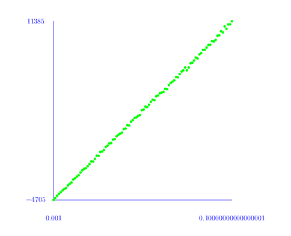
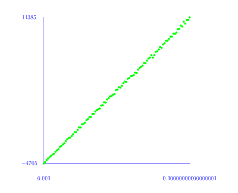
From this plot it seems that there is a phase change threshold at around p=0.025. An inspection of the first homology groups H_1(Y(100,p), Z) shows that in most cases there is no torsion. However, around the threshold some of the complexes do have torsion in their first homology.
Similar commands for Y(75,p) suggest a phase transition at around p=0.035 in this case. The following commands compute H_1(Y(75,p), Z) for 900 random 2-complexes with p in a small interval around 0.035 and, in each case where there is torsion, the torsion coefficients are stored in a list. The final command prints these lists -- all but one of which are of length 1. For example, there is one 2-dimensional simplicial complex on 75 vertices whose first homology contains the summand Z_107879661870516800665161182578823128. The largest prime factor is 80555235907994145009690263 occuring in the summand Z_259837760616287294231081766978855.
gap> torsion:=function(n,p) > local H, Y; > Y:=RegularCWComplex(RandomSimplicialTwoComplex(n,p)); > H:=Homology(Y,1); > H:=Filtered(H,x->not x=0); > return H; > end; function( n, p ) ... end gap> L:=[];;for n in [73000..73900] do > t:=torsion(75,n/2000000); > if not t=[] then Add(L,t); fi; > od; gap> Display(L); [ [ 2 ], [ 26 ], [ 259837760616287294231081766978855 ], [ 2 ], [ 3 ], [ 2 ], [ 2761642698060127444812143568 ], [ 2626355281010974663776273381976 ], [ 2 ], [ 3 ], [ 33112382751264894819430785350 ], [ 16 ], [ 4 ], [ 3 ], [ 2 ], [ 3 ], [ 2 ], [ 85234949999183888967763100590977 ], [ 2 ], [ 24644196130785821107897718662022 ], [ 2, 2 ], [ 2 ], [ 416641662889025645492982468 ], [ 41582773001875039168786970816 ], [ 2 ], [ 75889883165411088431747730 ], [ 33523474091636554792305315165 ], [ 107879661870516800665161182578823128 ], [ 5588265814409119568341729980 ], [ 2 ], [ 5001457249224115878015053458 ], [ 10 ], [ 12 ], [ 2 ], [ 2 ], [ 3 ], [ 7757870243425246987971789322 ], [ 8164648856993269673396613497412 ], [ 2 ] ]
Topological data analysis provides one motivation for wanting to compute the homology of a clique complex. Consider for instance the cloud of data points shown in Example 5.2-1. This data is a set S of 400 points in the plane. Let Γ be the graph with vertex set S and with two vertices joined by an edge if they lie within a Euclidean distance of 40 of each other. The clique complex K=K(Γ) could be studied to see what it reveals about the data. The following commands construct K and show that it is a 23-dimensional simplicial complex consisting of a total of 36191976 simplices.
gap> file:=HapFile("data134.txt");; gap> Read(file); gap> A:=VectorsToSymmetricMatrix(S,EuclideanApproximatedMetric);; gap> threshold:=40;; gap> grph:=SymmetricMatrixToGraph(A,threshold);; gap> dimension_cap:=100;; gap> K:=CliqueComplex(grph,dimension_cap); Simplicial complex of dimension 23. gap> Size(K); 36191976
The computation of the homology of this clique complex K is a challenge because of its size. If we are only interested in K up to homotopy then we could try to modify the graph Γ in such a way that the homotopy type of the clique complex is unchanged but the size of the clique complex is reduced. This is done in the following commands, producing a smaller 19-dimensional simplicial complex K with 4180652 simplices.
gap> ContractGraph(grph);; gap> dimension_cap:=100;; gap> K:=CliqueComplex(grph,dimension_cap); Simplicial complex of dimension 19. gap> Size(K); 4180652
To compute the homology of K in degrees 0 to 5 say, we could represent K as a regular CW-complex Y and then compute the homology of Y as follows. The homology H_n(K)= Z for n=0,1 and H_n(K)= 0 for n=2,3,4,5 is consistent with the data having been sampled from a space with the homotopy type of a circle.
gap> Y:=RegularCWComplex(K); Regular CW-complex of dimension 19 gap> Homology(Y,0); [ 0 ] gap> Homology(Y,1); [ 0 ] gap> Homology(Y,2); [ ] gap> Homology(Y,3); [ ] gap> Homology(Y,4); [ ] gap> Homology(Y,5) [ ]
generated by GAPDoc2HTML